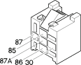

J043 Direction indicators / hazard warning lights relay ( FACIA )
- Path
- Electrical equipment > 3 Connectors > J Relays > J43 Direction indicators / hazard warning lights relay > J043 Direction indicators / hazard warning lights relay ( FACIA )
- Kind
- connector pinout (pin -> wire colour -> other end)
- Applies to
- all engines; all production periods
- Interactive page
- https://sloeber94.github.io/elrnDB-fMltpl/en/#/2890570
Applies to: all engines; all production periods

Wiring | Colour |
|---|---|
MARRONE (brown) |